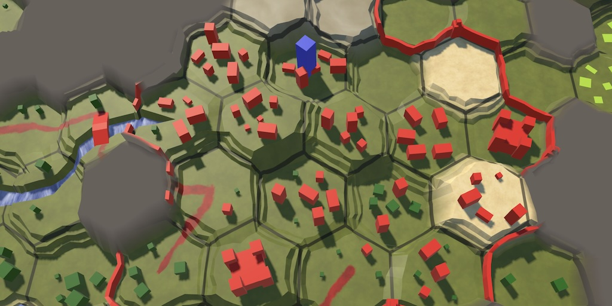

Hex Map 3.4.0
Cell Struct

This tutorial is made with Unity 2022.3.38f1 and follows Hex Map 3.3.0.
Moving Responsibilities
We continue our quest to get rid of the cell objects. This time we will achieve that goal, although we don't completely remove the HexCell type.
Flags and Values
To reduce the code size of HexCell we will get rid of all the properties that now simply forward to the flags and values. Other code should just access those directly. To allow this the Flags€ and Values properties of HexCell must become public.
public HexFlags Flags€ { … }
public HexValues Values { … }
To make this more convenient an HasRiver method to HexFlags that indicates whether a river exists in a given direction.
public static bool HasRiver( this HexFlags flags, HexDirection direction) => flags.HasRiverIn(direction) || flags.HasRiverOut(direction);
Also add ViewElevation and IsUnderwater properties to HexValues. We'll simply use Mathf.Max to determine the view elevation.
using UnityEngine; … public readonly int ViewElevation => Mathf.Max(Elevation, WaterLevel); public readonly bool IsUnderwater => WaterLevel > Elevation;
Moving Remaining Data to Grid
We're going to remove nearly all remaining data from the cell. Like we did earlier with other cell data we'll store it in arrays in HexGrid instead.
Add a publicly-accessible CellUnits array to the grid.
public HexUnit[] CellUnits
{ get; private set; }
Also give it arrays for the cell references to their chunk and their UI rect. But we keep these private because we'll make sure that nothing besides the grid needs to access these.
HexGridChunk[] cellGridChunks; RectTransform[] cellUIRects;
Create these arrays in CreateCells along with the other arrays. Let's also use the length of CellData as a reference for all lengths instead of the cells array length, because we're going to remove the latter later.
CellData = new HexCellData[CellCountZ * CellCountX]; CellPositions = new Vector3[CellData.Length]; cellUIRects = new RectTransform[CellData.Length]; cellGridChunks = new HexGridChunk[CellData.Length]; CellUnits = new HexUnit[CellData.Length]; searchData = new HexCellSearchData[CellData.Length]; cellVisibility = new int[CellData.Length];
Now we're going to modify CreateCell so it directly set the cell's explorable flag and elevation, and stores the UI rect and chunk reference in the array instead of the cell. We also merge the method with AddCellToChunk directly below it.
void CreateCell(int x, int z, int i)
{
…
// if (Wrapping) { … } else { … }
bool explorable = Wrapping ?
z > 0 && z < CellCountZ - 1 :
x > 0 && z > 0 && x < CellCountX - 1 && z < CellCountZ - 1;
cell.Flags€ = explorable ?
cell.Flags€.With(HexFlags.Explorable) :
cell.Flags€.Without(HexFlags.Explorable);
Text label = Instantiate(cellLabelPrefab);
label.rectTransform.anchoredPosition =
new Vector2(position.x, position.z);
RectTransform rect = cellUIRects[i] = label.rectTransform;
//cell.Elevation = 0;
cell.Values = cell.Values.WithElevation(0);
//AddCellToChunk(x, z, cell);
//}
//void AddCellToChunk(int x, int z, HexCell cell)
//{
int chunkX = x / HexMetrics.chunkSizeX;
int chunkZ = z / HexMetrics.chunkSizeZ;
HexGridChunk chunk = chunks[chunkX + chunkZ * chunkCountX];
int localX = x - chunkX * HexMetrics.chunkSizeX;
int localZ = z - chunkZ * HexMetrics.chunkSizeZ;
cellGridChunks[i] = chunk;
chunk.AddCell(localX + localZ * HexMetrics.chunkSizeX, i, rect);
}
Refreshing
Setting the cell elevation should also refresh the cell position. We copy the method responsible for this from the cell to the grid, adapting it to directly access the arrays. So it only needs a cell index parameter. We make it public so others can trigger a refresh as well.
public void RefreshCellPosition (int cellIndex)
{
Vector3 position = CellPositions[cellIndex];
position.y = CellData[cellIndex].Elevation * HexMetrics.elevationStep;
position.y +=
(HexMetrics.SampleNoise(position).y * 2f - 1f) *
HexMetrics.elevationPerturbStrength;
CellPositions[cellIndex] = position;
RectTransform rectTransform = cellUIRects[cellIndex];
Vector3 uiPosition = rectTransform.localPosition;
uiPosition.z = -position.y;
rectTransform.localPosition = uiPosition;
}
Invoke it in CreateCell after setting the elevation.
cell.Values = cell.Values.WithElevation(0); RefreshCellPosition(i);
Let's also add public methods to trigger a refresh for a whole cell a for a cell with its dependents, with are its neighbors and its unit.
public void RefreshCell(int cellIndex) =>
cellGridChunks[cellIndex].Refresh();
public void RefreshCellWithDependents (int cellIndex)
{
HexGridChunk chunk = cellGridChunks[cellIndex];
chunk.Refresh();
HexCoordinates coordinates = CellData[cellIndex].coordinates;
for (HexDirection d = HexDirection.NE; d <= HexDirection.NW; d++)
{
if (TryGetCellIndex(coordinates.Step(d), out int neighborIndex))
{
HexGridChunk neighborChunk = cellGridChunks[neighborIndex];
if (chunk != neighborChunk)
{
neighborChunk.Refresh();
}
}
}
HexUnit unit = CellUnits[cellIndex];
if (unit)
{
unit.ValidateLocation();
}
}
And finally also a new RefreshAllCells methods that performs a complete refresh of all cells.
public void RefreshAllCells()
{
for (int i = 0; i < CellData.Length; i++)
{
SearchData[i].searchPhase = 0;
RefreshCellPosition(i);
ShaderData.RefreshTerrain(i);
ShaderData.RefreshVisibility(i);
}
}
This methods is for HexMapGenerator.GenerateMap, which has to refresh all cells and can now do so by simply invoking the new method.
//for (int i = 0; i < cellCount; i++)//{//grid.SearchData[i].searchPhase = 0;//grid.GetCell(i).RefreshAll();//}grid.RefreshAllCells();
Saving and Loading
We also move the responsibility for saving and loading cells to the grid. In Save we simply write the values and flags of each cell. We now loop based on the length of CellData instead of the length of cells.
for (int i = 0; i < CellData.Length; i++)
{
//cells[i].Save(writer);
HexCellData data = CellData[i];
data.values.Save(writer);
data.flags.Save(writer);
}
Adjust Load in the same way. Here we also have to refresh the position, terrain, and visibility.
for (int i = 0; i < CellData.Length; i++)
{
//cells[i].Load(reader, header);
HexCellData data = CellData[i];
data.values = HexValues.Load(reader, header);
data.flags = data.flags.Load(reader, header);
CellData[i] = data;
RefreshCellPosition(i);
ShaderData.RefreshTerrain(i);
ShaderData.RefreshVisibility(i);
}
Label and Highlight
The cell will become oblivious to its label and highlight, because they're part of the separate UI. Copy the SetLabel, DisableHighlight, and EnableHighlight methods to HexGrid and adapt them to work with a cell index parameter and the UI rect array. These methods can remain private as only the grid needs to use them.
void SetLabel(int cellIndex, string text) =>
cellUIRects[cellIndex].GetComponent<Text>().text = text;
void DisableHighlight(int cellIndex) =>
cellUIRects[cellIndex].GetChild(0).GetComponent<Image>().enabled =
false;
void EnableHighlight(int cellIndex, Color color)
{
Image highlight =
cellUIRects[cellIndex].GetChild(0).GetComponent<Image>();
highlight.color = color;
highlight.enabled = true;
}
Next, adjust ClearPath and ShowPath so they use the methods of the grid itself. This also means that they no longer need to retrieve cells and can work with cell indices exclusively, no longer needing to retrieve cells.
public void ClearPath()
{
if (currentPathExists)
{
//HexCell current = cells[currentPathToIndex];
int currentIndex = currentPathToIndex;
while (currentIndex != currentPathFromIndex)
{
current.SetLabel(null);
current.DisableHighlight();
current = cells[searchData[current.Index].pathFrom];
SetLabel(currentIndex, null);
DisableHighlight(currentIndex);
currentIndex = searchData[currentIndex].pathFrom;
}
//current.DisableHighlight();
DisableHighlight(currentIndex);
currentPathExists = false;
}
else if (currentPathFromIndex >= 0)
{
//cells[currentPathFromIndex].DisableHighlight();
//cells[currentPathToIndex].DisableHighlight();
DisableHighlight(currentPathFromIndex);
DisableHighlight(currentPathToIndex);
}
currentPathFromIndex = currentPathToIndex = -1;
}
void ShowPath(int speed)
{
if (currentPathExists)
{
//HexCell current = cells[currentPathToIndex];
int currentIndex = currentPathToIndex;
while (currentIndex != currentPathFromIndex)
{
int turn = (searchData[currentIndex].distance - 1) / speed;
//current.SetLabel(turn.ToString());
//current.EnableHighlight(Color.white);
SetLabel(currentIndex, turn.ToString());
EnableHighlight(currentIndex, Color.white);
currentIndex = searchData[currentIndex].pathFrom;
}
}
EnableHighlight(currentPathFromIndex, Color.blue);
EnableHighlight(currentPathToIndex, Color.red);
}
Visibility
We're also going to make a few slight changes to the visibility code. First, IncreaseVisibility will set the explored flag directly.
//cells[i].MarkAsExplored();HexCell c = cells[i]; c.Flags€ = c.Flags€.With(HexFlags.Explored); cellShaderData.RefreshVisibility(cellIndex);
Second, ResetVisibility will loop based on the length of cellVisibility.
for (int i = 0; i < cellVisibility.Length; i++) { … }
Third, GetVisibibleCells will now also use access values and flags directly.
range += fromCell.Values.ViewElevation; … if (currentData.searchPhase > searchFrontierPhase || //!neighbor.Explorableneighbor.Flags€.HasNone(HexFlags.Explorable)) … if (distance + neighbor.Values.ViewElevation > range || distance > fromCoordinates.DistanceTo(neighbor.Coordinates))
Unit
Moving on to HexUnit, thanks to a recent change that we made, we can get the column index from the cell's coordinates in the Location setter, instead of from the cell itself.
Grid.MakeChildOfColumn(transform, value.Coordinates.ColumnIndex);
This is also the case for TravelPath.
int currentColumn = currentTravelLocation.Coordinates.ColumnIndex; … int nextColumn = currentTravelLocation.Coordinates.ColumnIndex;
Adjust IsValidDestination so it accesses the cell flags and values.
public bool IsValidDestination(HexCell cell) => cell.Flags€.HasAll(HexFlags.Explored | HexFlags.Explorable) && !cell.Values.IsUnderwater && !cell.Unit;
And do the same for GetMoveCost. We'll also directly go to HexMetrics to get the edge type, instead of asking a cell for it.
HexEdgeType edgeType = HexMetrics.GetEdgeType(
fromCell.Values.Elevation, toCell.Values.Elevation);
if (edgeType == HexEdgeType.Cliff)
{
return -1;
}
int moveCost;
if (fromCell.Flags€.HasRoad(direction))
{
moveCost = 1;
}
else if (fromCell.Flags€.HasAny(HexFlags.Walled) !=
toCell.Flags€.HasAny(HexFlags.Walled))
{
return -1;
}
else
{
moveCost = edgeType == HexEdgeType.Flat ? 5 : 10;
HexValues v = toCell.Values;
moveCost += v.UrbanLevel + v.FarmLevel + v.PlantLevel;
}
Downsizing Cells
We have moved data out of the cells and eliminated responsibilities from it. Now it's time to clean up HexCell, getting rid of what is no longer needed and restructuring the rest a bit.
Cell Refactoring
First, we keep the Unit property but make it forward to the grid's array so the cell no longer contains a direct reference to its unit.
public HexUnit Unit
{
get => Grid.CellUnits[index];
set => Grid.CellUnits[index] = value;
}
Keep the Grid, Index, Position, Unit, Flags€, and Values properties, but remove all other getters as they are no longer needed. We refactor all setters into methods with a value parameter. First is SetElevation, which replaces the Elevation setter.
public void SetElevation (int elevation)
{
if (Values.Elevation != elevation)
{
Values = Values.WithElevation(elevation);
Grid.ShaderData.ViewElevationChanged(index);
Grid.RefreshCellPosition(index);
ValidateRivers();
HexFlags flags = Flags€;
for (HexDirection d = HexDirection.NE; d <= HexDirection.NW; d++)
{
if (flags.HasRoad(d))
{
HexCell neighbor = GetNeighbor(d);
if (Mathf.Abs(elevation - neighbor.Values.Elevation) > 1)
{
RemoveRoad(d);
}
}
}
Grid.RefreshCellWithDependents(index);
}
}
Then comes SetWaterLevel.
public void SetWaterLevel (int waterLevel)
{
if (Values.WaterLevel != waterLevel)
{
Values = Values.WithWaterLevel(waterLevel);
Grid.ShaderData.ViewElevationChanged(index);
ValidateRivers();
Grid.RefreshCellWithDependents(index);
}
}
Followed by SetUrbanLevel.
public void SetUrbanLevel (int urbanLevel)
{
if (Values.UrbanLevel != urbanLevel)
{
Values = Values.WithUrbanLevel(urbanLevel);
Refresh();
}
}
Along with SetFarmLevel and SetPlantLevel, which look similar. After that comes SetSpecialIndex.
public void SetSpecialIndex (int specialIndex)
{
if (Values.SpecialIndex != specialIndex &&
Flags.HasNone(HexFlags.River))
{
Values = Values.WithSpecialIndex(specialIndex);
RemoveRoads();
Refresh();
}
}
Then SetWalled.
public void SetWalled (bool walled)
{
HexFlags flags = Flags€;
HexFlags newFlags = walled ?
flags.With(HexFlags.Walled) : flags.Without(HexFlags.Walled);
if (flags != newFlags)
{
Flags€ = newFlags;
Grid.RefreshCellWithDependents(index);
}
}
And finally SetTerrainTypeIndex.
public void SetTerrainTypeIndex (int terrainTypeIndex)
{
if (Values.TerrainTypeIndex != terrainTypeIndex)
{
Values = Values.WithTerrainTypeIndex(terrainTypeIndex);
Grid.ShaderData.RefreshTerrain(index);
}
}
We keep these setting functionality in HexCell because they take care of inter-cell dependencies when changing something of a cell. Only the map editor does that, but potential gameplay code that changes cells could rely on it as well.
The MarkAsExplored, GetEdgeType, and HasRiverThroughEdge methods will no longer be used, so remove them.
Next, adjust RemoveIncomingRiver and RemoveOutgoingRiver to directly work with flags. Also, we no longer have a reference to the cell's chunk because refreshing will be done by the grid. We'll instead invoke the simple Refresh method on the cells, which we'll change later.
void RemoveIncomingRiver()
{
//if (!HasIncomingRiver) { … }
if (Flags€.HasAny(HexFlags.RiverIn))
{
HexCell neighbor = GetNeighbor(Flags€.RiverInDirection());
Flags€ = Flags€.Without(HexFlags.RiverIn);
neighbor.Flags€ = neighbor.Flags€.Without(HexFlags.RiverOut);
neighbor.Refresh();
Refresh();
}
}
void RemoveOutgoingRiver()
{
//if (!HasOutgoingRiver) { … }
if (Flags€.HasAny(HexFlags.RiverOut))
{
HexCell neighbor = GetNeighbor(Flags€.RiverOutDirection());
Flags = Flags.Without(HexFlags.RiverOut);
neighbor.Flags = neighbor.Flags.Without(HexFlags.RiverIn);
neighbor.Refresh();
Refresh();
}
}
We need to know whether a river can flow from and cell to another in multiple places, so let's add a private static CanRiverFlow method to check this, given the values of two cells.
static bool CanRiverFlow (HexValues from, HexValues to) => from.Elevation >= to.Elevation || from.WaterLevel == to.Elevation;
Adjust SetOutgoingRiver to use that method and also directly work with values.
public void SetOutgoingRiver (HexDirection direction)
{
if (Flags.HasRiverOut(direction))
{
return;
}
HexCell neighbor = GetNeighbor(direction);
if (!CanRiverFlow(Values, neighbor.Values))
{
return;
}
RemoveOutgoingRiver();
if (Flags.HasRiverIn(direction))
{
RemoveIncomingRiver();
}
Flags€ = Flags€.WithRiverOut(direction);
//SpecialIndex = 0;
Values = Values.WithSpecialIndex(0);
neighbor.RemoveIncomingRiver();
neighbor.Flags = neighbor.Flags.WithRiverIn(direction.Opposite());
//neighbor.SpecialIndex = 0;
neighbor.Values = neighbor.Values.WithSpecialIndex(0);
RemoveRoad(direction);
}
Adapt AddRoad, RemoveRoads, and RemoveRoad similarly.
public void AddRoad(HexDirection direction)
{
HexFlags flags = Flags€;
HexCell neighbor = GetNeighbor(direction);
if (
!flags.HasRoad(direction) && !flags.HasRiver(direction) &&
Values.SpecialIndex == 0 && neighbor.Values.SpecialIndex == 0 &&
Mathf.Abs(Values.Elevation - neighbor.Values.Elevation) <= 1
)
{
Flags€ = flags.WithRoad(direction);
neighbor.Flags€ = neighbor.Flags.WithRoad(direction.Opposite());
neighbor.Refresh();
Refresh();
}
}
public void RemoveRoads()
{
HexFlags flags = Flags€;
for (HexDirection d = HexDirection.NE; d <= HexDirection.NW; d++)
{
if (flags.HasRoad(d))
{
RemoveRoad(d);
}
}
}
void RemoveRoad(HexDirection direction)
{
Flags€ = Flags.WithoutRoad(direction);
HexCell neighbor = GetNeighbor(direction);
neighbor.Flags = neighbor.Flags.WithoutRoad(direction.Opposite());
neighbor.Refresh();
Refresh();
}
Adjust ValidateRivers to work with flags as well.
void ValidateRivers()
{
HexFlags flags = Flags€;
if (flags.HasAny(HexFlags.RiverOut) &&
!CanRiverFlow(Values, GetNeighbor(flags.RiverOutDirection()).Values)
)
{
RemoveOutgoingRiver();
}
if (flags.HasAny(HexFlags.RiverIn) &&
!CanRiverFlow(GetNeighbor(flags.RiverInDirection()).Values, Values))
{
RemoveIncomingRiver();
}
}
From now on Refresh will simply forward to the grid's RefreshCell method.
void Refresh() => grid.RefreshCell(Index);
Finally, remove RefreshPosition, RefreshAll, Save, Load, SetLabel, DisableHighlight, and EnableHighlight as that functionality is now part of the grid.
Map Editor
We have to make a few changes to HexMapEditor. First, instead of setting the cell's TerrainTypeIndex property in EditCell we now have to invoke the cell's SetTerrainTypeIndex method, passing it the active terrain type index.
//cell.TerrainTypeIndex = activeTerrainTypeIndex;cell.SetTerrainTypeIndex(activeTerrainTypeIndex);
We have to make similar changes for all other editing cases.
Besides that, in UpdateCellHighlightData we still compare the cell with null to see whether it is an invalid edit target. We should change this to check whether the cell evaluates as false, like we do everywhere else.
//if (cell == null)if (!cell)
Conversion to Struct
We are now finally going to eliminate the HexCell object. However, we keep its type, changing it to a struct type.
public struct HexCell
This will keep the current code that still relies on HexCell functional, providing a convenient facade for the data stored in the grid. The only data that we still need to store in the cell is its index and a reference to its grid. We introduce fields for these to make it clear what exactly gets stored.
#pragma warning disable IDE0044 // Add readonly modifier int index; HexGrid grid; #pragma warning restore IDE0044 // Add readonly modifier
Give it a constructor method to initialize both.
public HexCell(int index, HexGrid grid)
{
this.index = index;
this.grid = grid;
}
All of the cell's code that references the Index property can now directly access the index field instead. We do keep the public getter though, so the index is still accessible by other code. It now becomes a readonly property.
public readonly int Index => index;
No code outside the cell needs to access its grid, so remove the Grid property. All cell code should directly access the grid field instead.
Now that the cell is no longer an object the implicit conversion to boolean has to change. Instead of checking whether the cell is null we check its grid instead. The idea is that an invalid cell matches the default struct value, which has no grid.
public static implicit operator bool(HexCell cell) => cell.grid != null;
Finally, mark everything besides the two fields as readonly. The fields themselves cannot be readonly because of Unity's hot reloading limitation. For the same reason the values field in HexValues isn't readonly either.
Cell Equality
Some code relies on checking whether cells are equal. To keep that code working with cell structs we have to include custom == and != operators. Cells are equal if both their index and their grid are the same.
public static bool operator ==(HexCell a, HexCell b) => a.index == b.index && a.grid == b.grid; public static bool operator !=(HexCell a, HexCell b) => a.index != b.index || a.grid != b.grid;
If we overload these operators the compiler insists that we also override the Equals method that has an object parameter, in case an equality check is done with boxed values.
public readonly override bool Equals(object obj) => obj is HexCell cell && this == cell;
We are also asked to override the GetHashCode method. We simply take the hashes of the index and grid and binary XOR them.
public readonly override int GetHashCode() => grid != null ? index.GetHashCode() ^ grid.GetHashCode() : 0;
Grid
Now that cells are no longer objects the grid doesn't need to keep track of them anymore, so remove its cells array.
//HexCell[] cells;… void CreateCells() {//cells = new HexCell[CellCountZ * CellCountX];… }
We can no longer return null when a cell isn't found in the GetCell method with a Ray parameter. So we instead return the default struct value, which implicitly evaluates as false because it has no grid.
public HexCell GetCell(Ray ray)
{
…
return default;
}
The same goes for the GetCell method with an HexCoordinates parameter. Also, instead of returning a cell from the array we return a new struct value with the cell index and a reference to the grid.
public HexCell GetCell(HexCoordinates coordinates)
{
…
if (z < 0 || z >= CellCountZ || x < 0 || x >= CellCountX)
{
return default;
}
return new HexCell(x + z * CellCountX, this);
}
Adjust TryGetCell with HexCoordinates in the same way.
public bool TryGetCell(HexCoordinates coordinates, out HexCell cell)
{
…
if (z < 0 || z >= CellCountZ || x < 0 || x >= CellCountX)
{
cell = default;
return false;
}
cell = new HexCell(x + z * CellCountX, this);
return true;
}
And GetCell with a cell index too.
public HexCell GetCell(int cellIndex) => new(cellIndex, this);
CreateCell also has to work with a new struct value now.
//var cell = cells[i] = new HexCell();var cell = new HexCell(i, this);
And so do both Search and GetVisibleCells.
//HexCell current = cells[currentIndex];var current = new HexCell(currentIndex, this);
The HexCell object is now finally gone. All we have left is a small HexCell struct that is used in a few places.
The next tutorial is Hex Map 4.0.0.